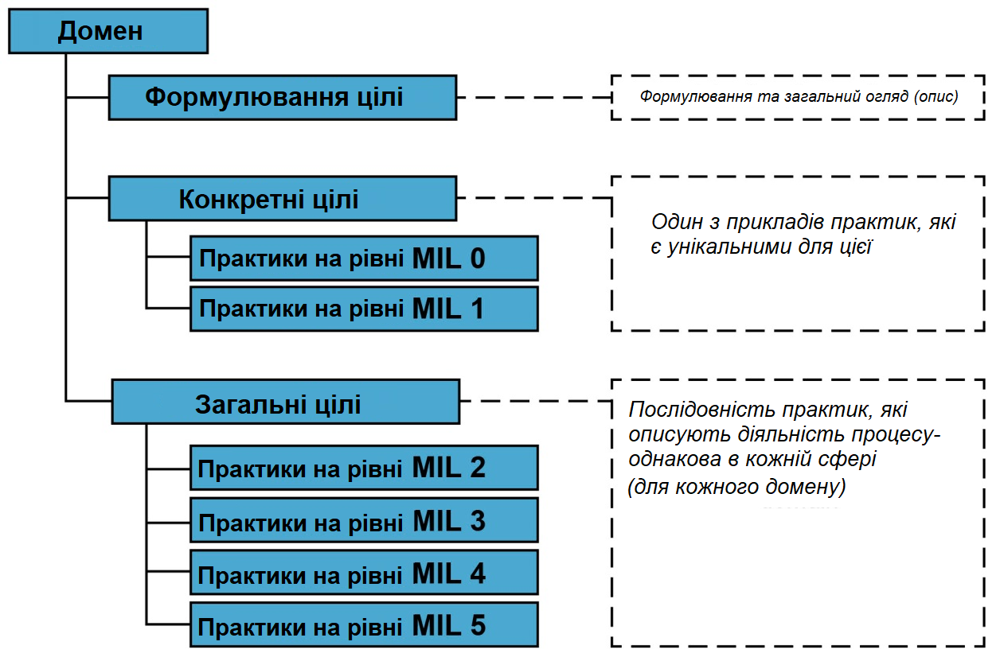

|
<< Click to Display Table of Contents >> Navigation: »No topics above this level« 1. Про нетехнічне оцінювання операційної стійкості та практик кібербезпеки організації CISA Cyber Resilience Review |
CISA Cyber Resilience Review (CRR) - це програма оцінювання управління кібербезпекою компанії на основі проведеного аналізу.
забезпечує вимірювання можливості кібернетичної стійкості організації. Оцінювання CRR також дозволяє організації здійснити вимірювання своїх можливостей в контексті NIST Cybersecurity Frameworh (CSF) версії 1.1, причому результати CRR відображаються у термінах NIST CSF.
CRR оцінювання спрямоване на вивчення процесів керування кібербезпекою, які є критично важливими для успішної роботи організації.
CRR зосереджена на методах захисту та підтримки у випадку виникнення кіберзагрози; вимірює основні можливості роботи в сфері кібербезпеки для забезпечення кращих показників операційної роботи компанії як під час звичайного режиму роботи, так і під час операційного перенавантаження.
CRR походить від CERT® Resilience Management Mode (CERT-RMM)..
Ця модель була розроблена підрозділом CERT в Інституті програмної інженерії Університету Карнегі-Меллона.
CERT-RMM - це модель, яка спрямована на вдосконалення процесів в управлінні безпекою в бізнесі та управлінні операціями в галузі інформаційних технологій.
У Таблиці 1 детально описані сфери практики, які розглядаються в CRR. Кожна сфера визначає важливі можливості, які сприяють кіберстійкості організації.
Таблиця 1: Структура домену CRR
CRR Домен |
К-сть цілей |
Кількість цільових реалізованих практик |
Кількість практик рівня показників зрілості (MIL) |
Управління активами / Asset Management (AM) |
7 |
30 |
13 |
Управління заходами / Controls Management (СА) |
4 |
16 |
13 |
Конфігурація та управління змінами / Configuration and Change Management (CCM) |
3 |
23 |
13 |
Управління вразливостями / Vulnerability Management (VM) |
4 |
15 |
13 |
Управління інцидентами / Incident Management (IM) |
5 |
23 |
13 |
Управління безперервністю сервісу / Service Continuity Management (SCM) |
4 |
16 |
13 |
Управління ризиками / Risk Management (RM) |
5 |
13 |
13 |
Управління зовнішними залежностями / External Dependencies Management (EDM) |
5 |
14 |
13 |
Навчання та обізнаність / Training and Awareness (TA) |
2 |
11 |
13 |
Ситуаційна обізнаність / Situational Awareness (SA) |
3 |
8 |
1 |
Кожні практики у домені складаються з формулювання цілі, набору конкретних цілей і пов'язаних з ними практичних запитань, які є унікальними для цієї практики, а також стандартного набору запитань для визначення рівня зрілості (MIL).
Завдання MIL досліджують рівень практичних навичок в організації.
На рисунку нижче графічно представлена структура домену CRR.

Всі питання CRR мають три варіанти відповідей: "Так", "Ні" та "Не завершено".
підготовлено у редакторі Help & Manual 9.3.0